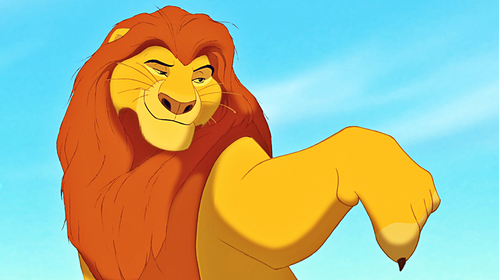

сын Короля-льва Муфасы и королевы Сараби, племянник Шрама . В детстве был неугомонным и любопытным львёнком, из-за чего часто попадал в неприятности . После внезапной смерти отца (в которой винит себя) львёнок был вынужден покинуть родное королевство. За пределами родины львёнка приютили и воспитали сурикат Тимон и бородавочник Пумба, и бок о бок с ними беглый юный принц живёт беззаботную и лёгкую жизнь. Став взрослым, Симба встречается с духом погибшего отца, убедившего его в истинном предназначении. Прозревшему и разобравшемуся в себе принцу предстояло вернуться и спасти Земли Прайда от окончательного упадка.
